Mahalabharti
Introduction
To enable citizens of Maharashtra to avail the schemes published by the government. It is
important to solve this problem as many people, specially poor people are unaware of the
schemes that are applicable to them. Knowing a scheme and its benefits will help them to
carry out a better lively hood.
PROTOTYPES - Before the research, based on assumptions
Following the F pattern to show most important information
It is Important for people to know whose profile is opened, as family can see & operate each
other’s profiles hence the most important information was placed on left most side. The
profile picture and all associated family members were placed below to the profile
information.
The 2nd goal was to show people the scheme benefits that they can avail along with the
scheme names, hence it was placed in the centre, related news updates were placed below it
like feed.
3rd goal was to inform about important details hence it was placed at top right where it can
be easily viewed.
The least but important part was recent scheme related activity to show which schemes have
been availed by user, hence it was placed at bottom right.
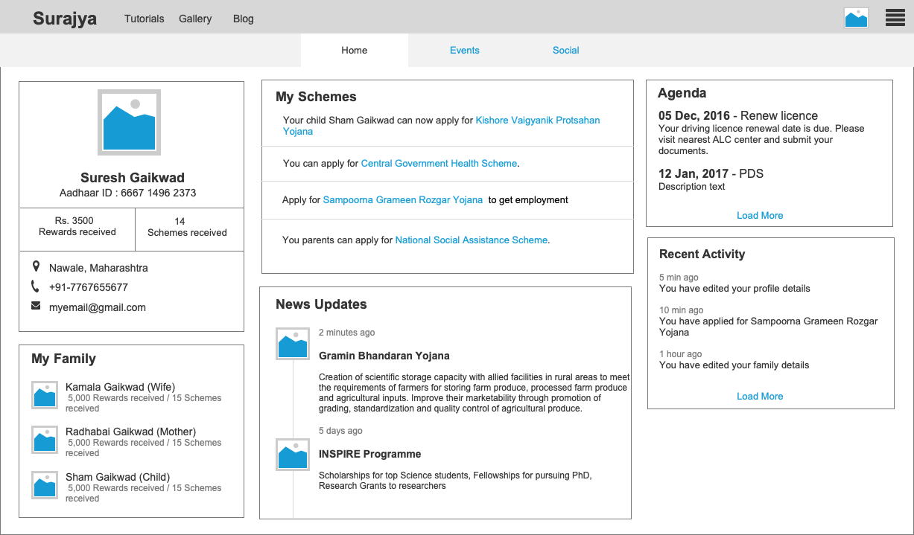
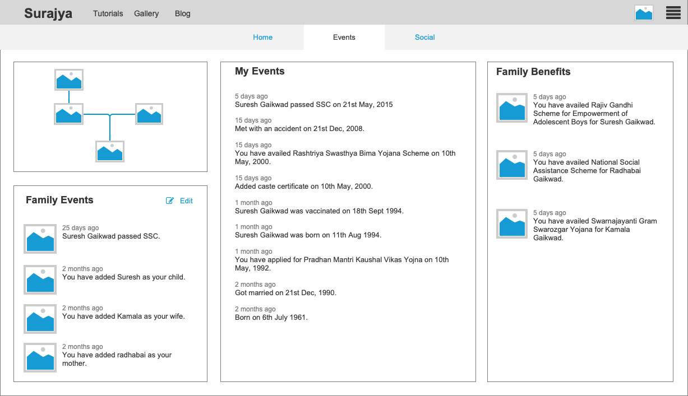
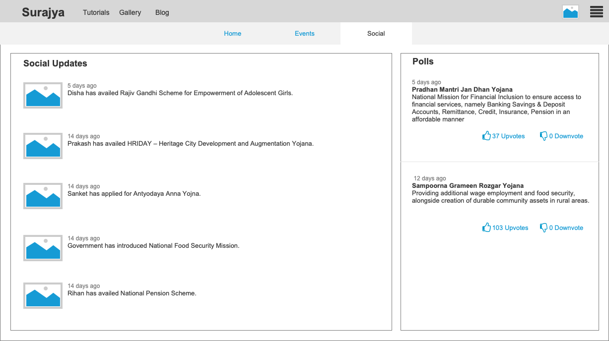
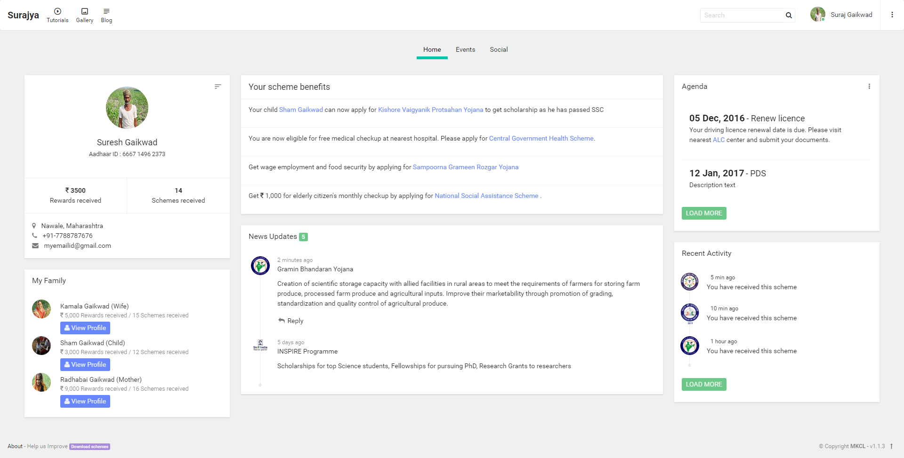
{kind=link}
{kind=link}
{kind=link}
{kind=link}
EXPLORATION & RESEARCH
Learning more about the main users
Taking action towards the assumption, we (Project Manager, Business executives, Project
Architect, Developers and Myself ) visited a nearby village named Navale, to learn more
about our users.
 The route we chose
The route we chose
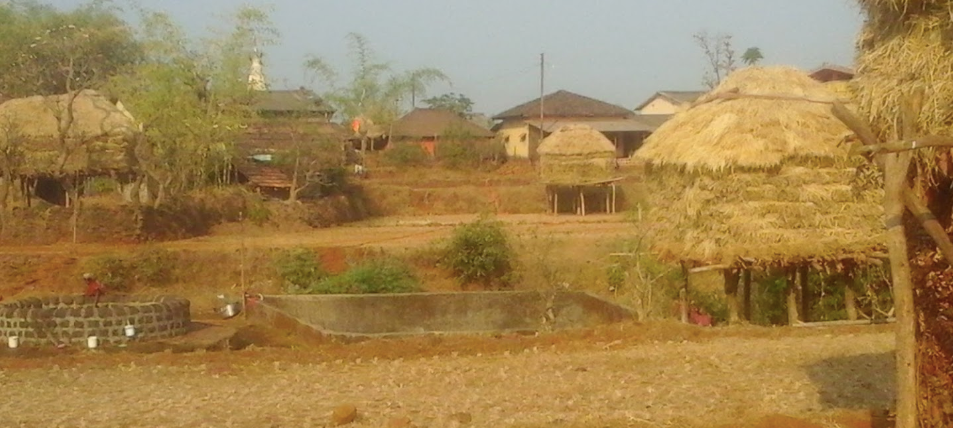
The Navale village
{kind=link}
We met around 50 villagers in the panchayat area of the village. Each team member met 3-5
villagers and created their personas.
PERSONAS
There were 2 more people having stories similar to Kachrabai, who were sitting with her
while I was interviewing.
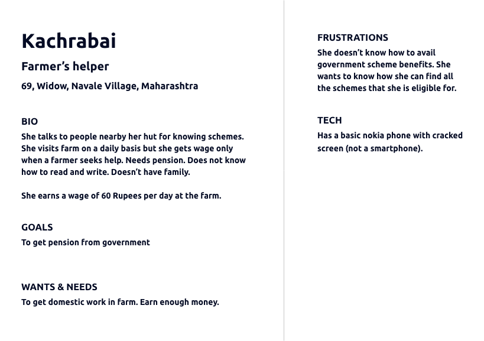
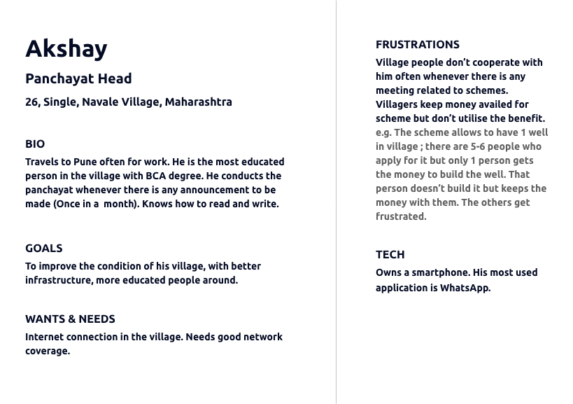
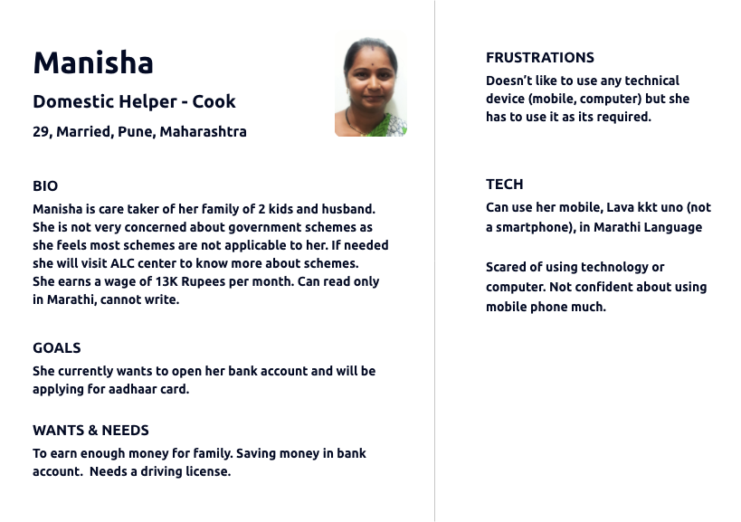
{kind=link}
{kind=link}
{kind=link}
ANALYSING RESEARCH
Performing Thematic Analysis of Qualitative Research Data Collected
- People are interested in scheme benefits and not scheme names.
- Majority people in the village lacked internet connection & mobile network.
- They were not aware of schemes, they only became aware if their neighbours got some scheme benefits and they didn't.
- < 5% people are able to read their native language, 95% population are unable to read & write.
- Commuting is a problem in most remote villages as banks, school, govt offices are far away.
- There is corruption in the govt. offices.
- 95% people near poverty line are not techsavy, they need someone who can assist them with technology.

IDEATION
Solutions based on research insights
We realised we needed an
offline + online application that would run in the Panchayat computer in
native language, where a trained professional(assistant) from MKCL's ALC
(Authorised learning centre) or a trained person from village will add entries of all
citizens who wish to learn about schemes.
Once in a month this person will take the computer to the nearby town to upload
citizen's data online.
Data synced to cloud will be accessible and shared with the concerned departments (later
scope).
We understood the citizen’s demand is to know the scheme benefits rather
than just scheme names. Knowing benefits motivates them to avail scheme.
Picture speaks a thousand words.
Knowing that not everyone can read and write, we came up with pictures of all
schemes. So now the citizens have to point out the schemes they want by seeing
the pictures, and the trained professional (assistant) would register citizen and select
schemes on behalf of the citizen
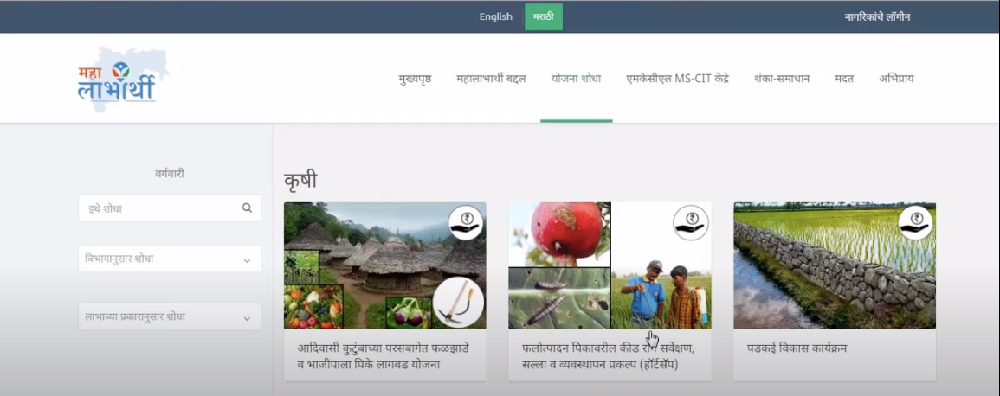
The assistant would then share the print out of GR (Government Resolution) and the scheme
form along with list of required documents to the village citizen. The citizens are now well
informed about the scheme they are eligible for, the documents needed to proceed and they
also have the scheme form with them.
This was the flow for Village citizens or the citizens who need technical help. In city
areas the citizens can either do the entire process on their own or they can approach
nearest ALC centre. Maharashtra has over 5000 + ALC centres by MKCL.
Flow of Service
Below is the flow of how citizens will know the list of documents required to get any scheme
benefits and the scheme form which needs to be submitted to concerned departments.
- Citizen (ALC coordinater/ Assistant on behalf and in presence of citizen) will register on the portal.
- Citizen will fill in basic information like education details, income
- Citizen will select their role as farmer, teacher etc. or the schemes they are interested in like Atal pension yojna etc.
- Citizens will be asked to further fill up any extra details required based on their scheme/role selection.
- The eligible schemes based on selection/ all other eligible schemes is shown to the citizen.
- Citizen can get a print out of the documents required for respective scheme and scheme forms that they need to submit in the respective department.
{kind=link}
INFORMATION ARCHITECTURE (IA)
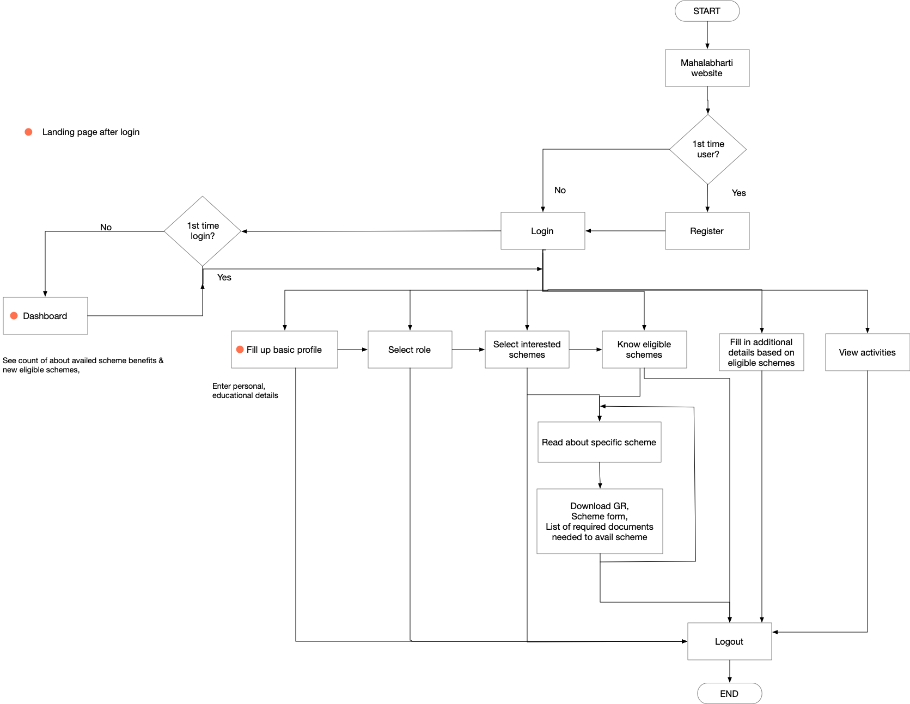
{kind=link}
PROTOTYPES - After the research
We learned that our users are not tech-savvy and most users cannot read & write. People in
villages who can read, can only read Marathi language.
Based on the above insights from research it was decided to create application which shows
images of all scheme benefits. The application was made in Marathi, Hindi & English.
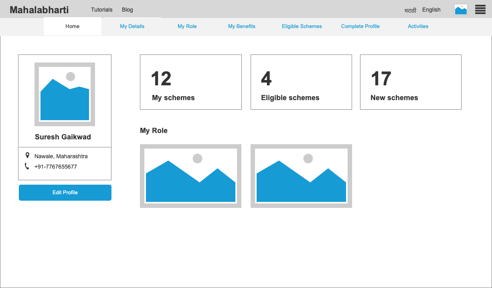
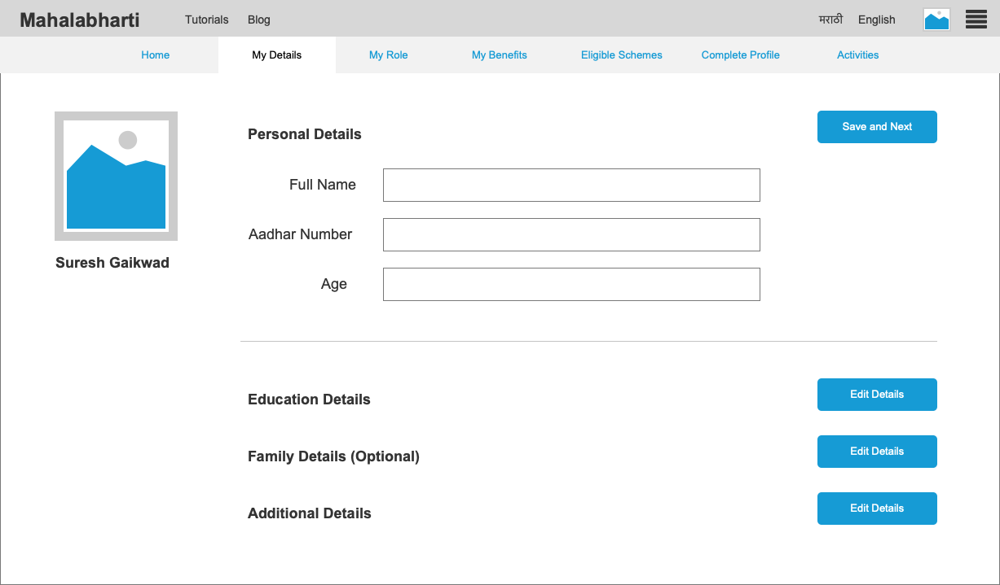
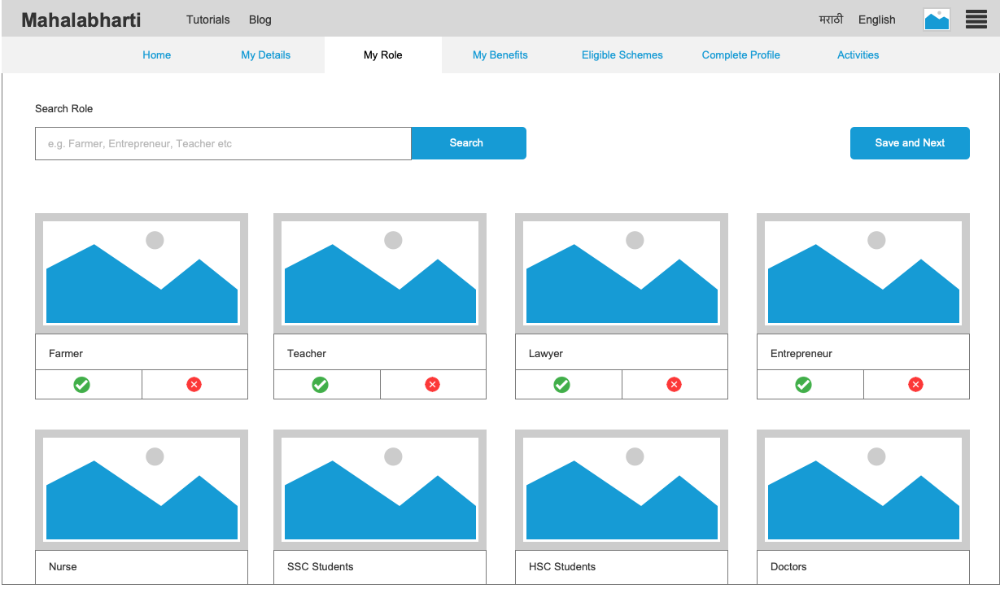
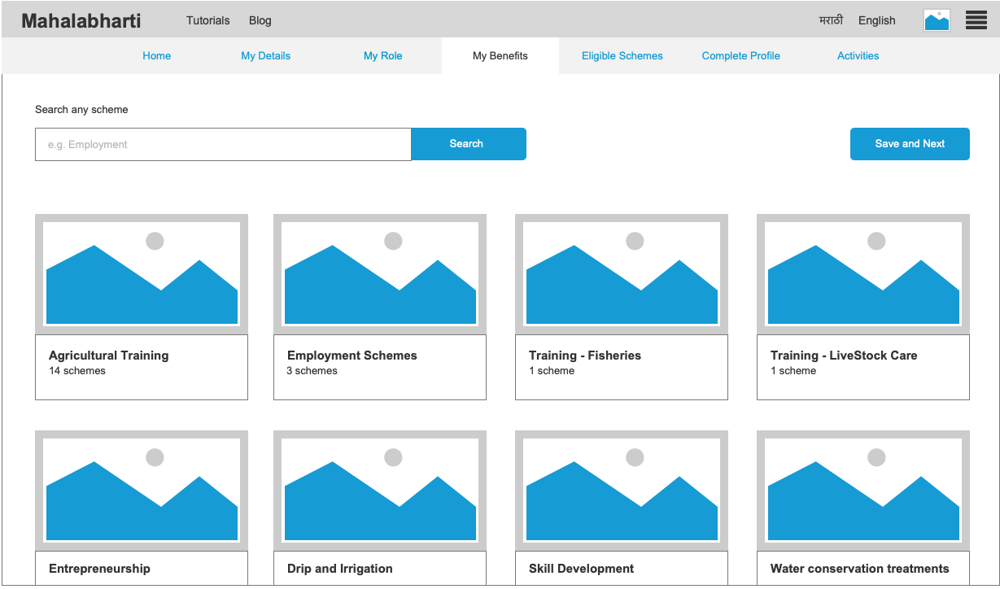
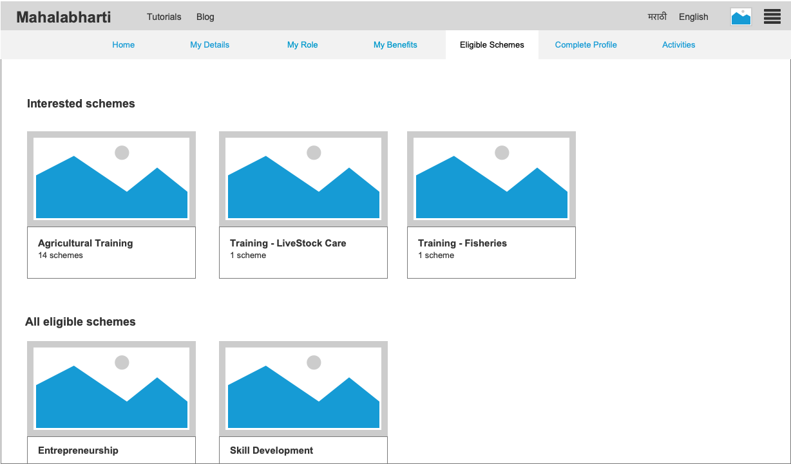
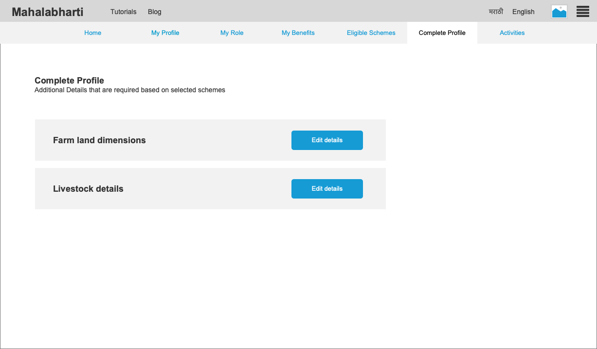
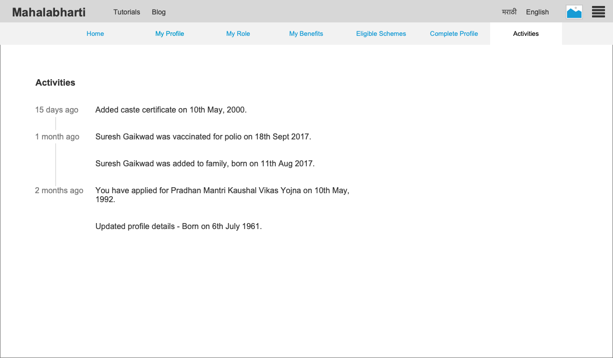
{kind=link}
{kind=link}
{kind=link}
{kind=link}
{kind=link}
{kind=link}
{kind=link}
USABILITY TESTING
I carried out Guerrilla usability testing with 3 citizens who were aged 25
(techsavy), 42(not techsavy) & 53(not techsavy). I asked them questions to complete certain
tasks and noted down time they took to complete it. Based on 1st testing result, few UI
changes were made which impacted usability of software drastically. I recorded my screen
using Camtasia software and shared recording with entire team with the consent of
participants.

After fixing usability issues, the effectiveness score was up to 94% as users were able to
complete 17/18 tasks successfully.
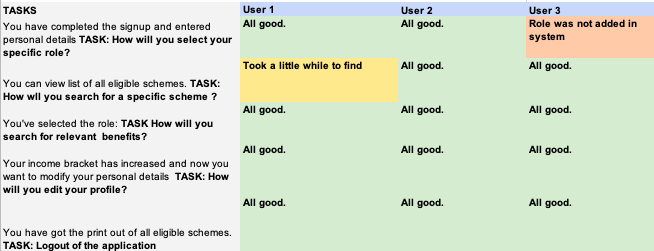
{kind=link}
The product was then tested on a larger scale with 5,000 people (MKCL's ALC Centers) and 1
lakh students (MKCL's MFS students).
We learned about 500 success stories where Mahalabharthi helped these people with government
scheme benefits.
These success case studies were then pitched to Govt. of Maharashtra Chief Minister's
Office, and the product was launched by CM in entire Maharashtra.
FEEDBACK and NEWS
More than 5,00,000 citizens registered with the application and availed scheme benefits. The
government announced in News channels about the launch of the product to create awareness
amongst all citizens. The project was highly appreciated by people and government. Haryana
government contacted MKCL for creating similar initiative in Haryana.
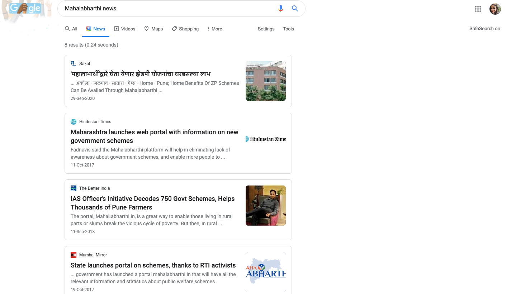
{kind=link}
LEARNINGS
Talking to people in their native language helps them to open up and talk to you more
freely, specially when we are in remote areas of the state.